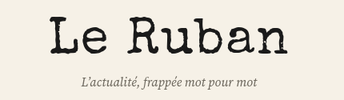

Le Ruban : Journal d'actualité politique, quoi de nouveau ?

Encore un nouveau site d'actualité politique... Vous en avez peut être marre ? Présentation par La Rédaction en ésperant que vous resterez.

FÉLICITATION CHER LECTEUR : Vous avez enfin trouvé un énième webjournal ! A nous maintenant de vous convaincre, a juste titre, de lire notre journal plutôt qu'un autre ! Le Ruban est un journal à but non-lucratif créé par un groupe de passionné en actualité Politique et Géopolitique. Ce média, ne vous imposera JAMAIS de pub, ou d'abonnements. Tout nos articles sont gratuit, sourcés, et vérifiés. EN cas d'erreur, n'hésitez pas à le signaler à l'adresse mail "slne-officiel@proton.me" (notre groupe se nomme SLNE. Considérez le comme la maison mère de ce journal. SLNE est une association de développeurs à but non lucratifs. Vous excuserez notre URL, mais avec un budget 0, c'était la seule gratuite. Sachez cependant qu'un journal gratuit ne signifie pas un journal non-fiable, et nous ferons toujours tout pour répondre aux attentes de nos lecteurs.). Ensuite, la fiabilité : nos informations sont vérifiés et coupés. Vous n'aurez jamais une information sortie du chapeau ! Enfin, aucun de nos articles n'est et ne sera rédigé par IA. Nous tenterons également de rester ponctuels dans nos publications.
Histoire de le Ruban : Le Ruban (de la machine à écrire, pas du papier cadeau), à été créé en raison de la politisation de plus en plus intense des groupes médiatiques actuels, de la création de plus en plus forte de paywall (l'article du journal n'est pas disponible sans abonnement) et de la céation exponentielle de média web indépendant malheureusement non sourcé. Le Ruban souhaite changer cela en apportant des informations gratuites et vérifiées facile d'accès. Si vous souhaitez nous conseiller un article, vous pouvez le faire à tout moment en nous adressant un mail à slne-officiel@proton.me.
Accéder à Le Ruban
Voila la partie la plus simple : Pour accéder à Le Ruban, il vous suffit d'entrer l'URL lemillitaire3330.github.io/leruban ou bien de taper Le Ruban ou Le Ruban journal en recherche Google (prochainement). Le Ruban n'est pas payant et tous ses articles vous sont disponible.
« Nous serons toujours gratuit » Le Ruban